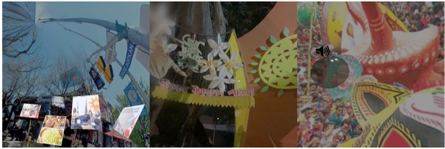
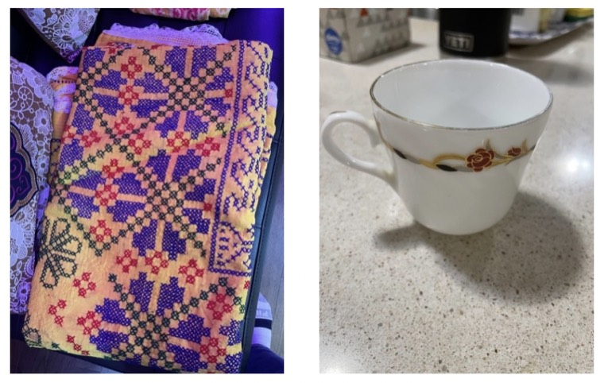
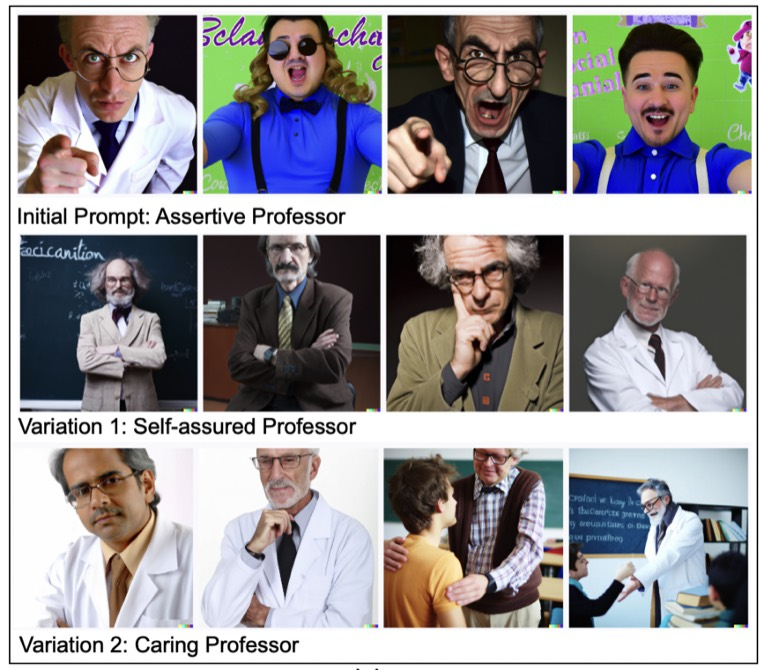
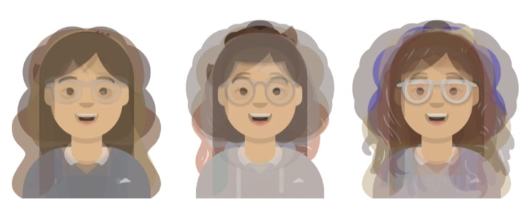
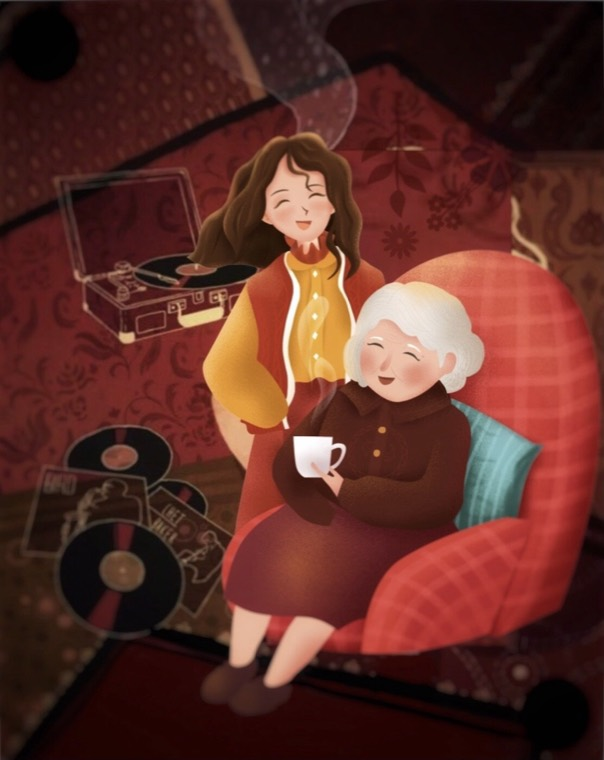
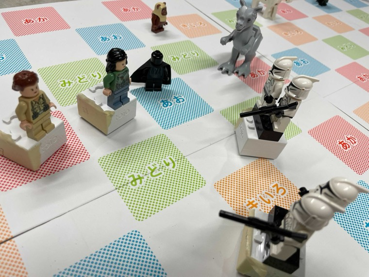
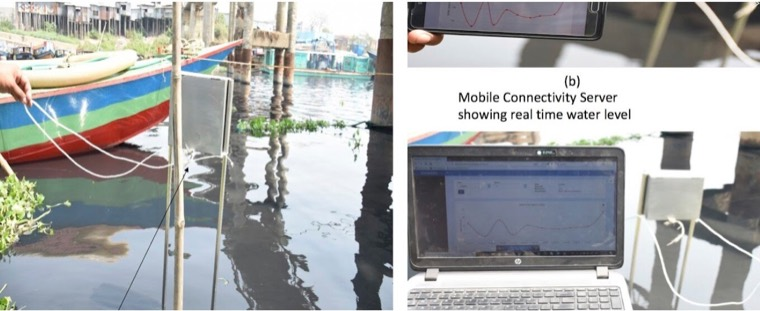

Publications
A Memory-Centric Approach for Design to Support Cultural Continuation for Migrant CommunitiesDoctoral Consortium
Nabila Chowdhury
CSCW 2026 · 10.1145/3785651.3830038
Teleporting through Memories: Designing Immersive Spaces for Narrating Personal Migration ExperiencesUnder review
Nabila Chowdhury, Anna Offenwanger, Theophanis Tsandilas, Fanny Chevalier, Syed Ishtiaque Ahmed
Repairing Memory with Care: Understanding Multigenerational Migrant Families' Collaborative Work through (In)tangible ArtifactsUnder review
Nabila Chowdhury, Marisol Wong-Villacres, Natasha Shokri, Syed Ishtiaque Ahmed, Cosmin Munteanu, Negin Dahya
MomentsVR: Accessible Immersive Spaces for Authoring Personal Narration
Nabila Chowdhury, Anna Offenwanger, Theophanis Tsandilas, Fanny Chevalier, Syed Ishtiaque Ahmed
CSCW 2025 · 10.1145/3715070.3749270
Politics of the Past: Understanding the Role of Memory, Postmemory, and Remembrance in Navigating the History of Migrant Families
Nabila Chowdhury, Natasha Shokri, Cibeles Herrera Valera, Azhagu Meena Sp, Carolina Reyes Marquez, Mohammad Rashidujjaman Rifat, Marisol Wong-Villacres, Cosmin Munteanu, Negin Dahya, Syed Ishtiaque Ahmed
CHI 2024, Honolulu · 10.1145/3613904.3642496
An Exploration of Prompt-Based Biases in AI Art-Generated Tools
Nabila Chowdhury, Anastasia Kuzminykh
GenAICHI Workshop at CHI 2023
Music co-listening over video chat to support intergenerational connectedness: An exploratory study
Nabila Chowdhury, Celine Latulipe, James E. Young
Gerontechnology 21(1), 2022 · 10.4017/gt.2023.21.1.778.03
Listening Together while Apart: Intergenerational Music ListeningPoster
Nabila Chowdhury, Celine Latulipe, James E. Young
CSCW 2021 Companion · 10.1145/3462204.3481765
Projects

Authoring Memory Narratives in VR
PhD project · 2023 – present
How can virtual reality support people in curating and sharing personal memory, particularly in the context of migration?
I run memory-authoring workshops with migrant participants inside immersive environments and study how people compose,
revisit, and narrate their own histories in space.

Culture, Memory, Migration & Technology
With Dr. Negin Dahya, Dr. Cosmin Munteanu, Dr. Ishtiaque Ahmed · 2022 – 2025
A multi-community study of how grandparents and grandchildren preserve and exchange memory and culture across migration
contexts, and what role technology plays in intergenerational memory curation. My work spans focus groups, interviews,
and thematic analysis across several diaspora communities.

Prompt-Based Bias in AI-Generated Art
With Dr. Anastasia Kuzminykh, in collaboration with Naver · 2023
Beyond the biases baked into a model, how do a user's own prompts surface biased output? This project examines
prompt-triggered bias in AI art generation tools, with the aim of helping people write prompts that produce
fairer results.

Older Adults & Conversational Agents
With Dr. Anastasia Kuzminykh · 2022
An investigation of how older adults perceive the voices of smart speakers such as Alexa and Google Home — which voice
characteristics they prefer, and why — in order to design conversational agents that actually suit them.

Intergenerational Music Co-Listening
MSc thesis, with Dr. Celine Latulipe & Dr. James E. Young · 2020 – 2022
An exploratory study of how grandparents and teenage grandchildren use technology to be online together and talk about
music they love, and of the social and technical barriers that make those moments hard to sustain.

StoryTime: Collaborative Story Creation
UIST Student Innovation Competition · 2021
A tangible interface built on toio robots that lets a grandparent and grandchild take turns building a story together
and recording audio narration, supporting remote, playful intergenerational interaction. Selected as one of twelve teams.

Shonabondhu
Undergraduate capstone, with Dr. Nova Ahmed · North South University
A flash-flood warning system for rural Bangladesh, combining IoT sensing with HCI-led system design to give
communities advance notice before flooding reaches them.
Teaching
Instructor
Summer 2024
CCT 477 — UX Design: Understanding Users
University of Toronto Mississauga. Designed and delivered a full undergraduate course grounded in HCI theory and UX
research practice — user-centred design principles, qualitative methods (interviews, contextual inquiry, think-aloud
studies), quantitative usability evaluation, and iterative prototyping — including all lecture content, assessments,
and mentorship of independent student design projects.
Teaching Assistant — 2022 – present
Across these courses I led tutorials and labs, designed quiz and tutorial content, graded assignments and reports,
and held office hours supporting students through design and programming projects.
- INFH 2191 — User Interface Design
- INFH 2171 — Usability Assessment
- INFH 2169 — User-Centred Information Systems Development
- INFH 1602 — Fundamentals of UX
- INFH 2040 — Project Management
- INFH 2170 — Information Architecture
- INFH 1339 — Introduction to Computational Thinking
- INFH 1003 — Information Systems, Services, and Design
- COMP 1010 — Introductory Computer Science (U. Manitoba)
Awards & Service
Honours
2026
Inclusive Excellence Research Grant ProgramUniversity of Toronto
2025
Ontario Graduate Scholarship (OGS)University of Toronto
2023 – 2024
Delta Kappa Gamma World FellowshipUniversity of Toronto
2021
Faculty of Graduate Studies Research Completion ScholarshipUniversity of Manitoba
2020
International Graduate Student Entrance ScholarshipUniversity of Manitoba
Service
2024 – present
Reviewer
CHI (full & short papers, case studies, late-breaking work, GenAI workshop) · CSCW (full & short papers) · DIS (full papers)
2022 – 2023
Reviewer
CHI papers, case studies, and late-breaking work
Ongoing
Affiliate, University of Waterloo
TAG Lab and Research Institute for Aging
Press
Oct 2021
CBC Radio — Up To Speed with Faith Fundal
"Wanted… teenagers who are willing to listen to music with their grandparent — all in the name of science."
Listen